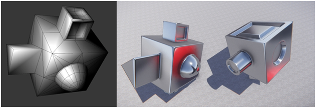

Основные моменты выпуска
NoMaps

NoMaps — это отдельный инструмент, созданный Crytek для создания высококачественных карт нормалей касательного пространства для CRYENGINE. Раньше, когда люди пытались создать карты нормалей касательного пространства для нашего ENGINE, им приходилось использовать программное обеспечение, которое предполагало, как наш рендерер реализует касательное пространство. Проблема заключалась в том, что ни одно программное обеспечение не знало, как именно CRYENGINE отображает касательное пространство, поэтому карты нормалей никогда не были абсолютно точными или оставались совместимыми между ревизиями/версиями ENGINE. Теперь с NoMaps Crytek предлагает автономный инструмент, который создает карты нормалей касательного пространства непосредственно для CRYENGINE. Это программное обеспечение берет объект и соответствующую ему карту нормалей объектного пространства, а затем преобразует его в карту нормалей касательного пространства, которая идеально соответствует его сетке. Таким образом, NoMaps помогает получить высококачественные ресурсы для CRYENGINE, одновременно упрощая предыдущие рабочие процессы (требуется только карта нормалей объектного пространства).
Oculus 0.8 SDK + поддержка сенсорных контроллеров
CRYENGINE 3.8.6 поддерживает бета-версию Oculus 0.8.0.0 SDK и контроллеры Oculus Touch. Однако для использования этих функций вам необходимо установить Oculus 0.8.0.0-бета-версия среды выполнения для Windows и установите драйверы GPU, рекомендованные Oculus.
Редактор
Генеральный редактор
- Исправлено: Области навигации не обновляли свою навигационную сетку при перемещении.
- Исправлено: Объемы воды не обновили вновь назначенный материал.
- Исправлено: Объемы воды не обновляли свое содержимое при перемещении.
- Исправлено: AreaSystem — Области теперь можно создавать только из двух точек.
- Исправлено: AreaSystem — профилактическое исправление, обеспечивающее успешную сериализацию AreaShape в случае несоответствия между количеством локальных точек и точками аудиопрепятствия.
- Исправлено: AreaSystem — Прокси-сервер области не обновлялся правильно во время операции клонирования.
- Исправлено: AreaSolid — теперь доступен параметр «Заполнено».
- Исправлено: AreaSolid — Звук просачивается из тонкой щели в AreaSolid.
- Исправлено: Встроенная загрузка LOD и свободная загрузка LOD в генераторе LOD.
- Исправлено: Генерация обратного касательного кадра в LOD-генераторе.
- Исправлено: Сбой при извлечении материала в редакторе.
- Исправлено: Представления отладки G-буфера не сбрасываются должным образом.
- Исправлено: AreaProxies — больше не создается на объектах, производных от CShapeObject, которые не закрыты (это исправлено, например, для выступов экземпляра, для которых не требуется создание AreaProxy (из-за неправильной инициализации AreaProxies)).
- Исправлено: GameVolumes — GameVolumes, которые были превращены в префабы, неправильно инициализировали свои прокси области.
- Изменено: AreaSolid — Материал(ы), используемые в сущности AreaSolid, были изменены так, что они больше не чувствительны к свету.
- Изменено: Диалоговое окно настроек слоя — некоторые флажки переименованы, теперь лучше поясняется, что они делают.
- Изменено: элементы свойств RollupBar без допустимого ограничения — ползунок больше не создается.
Designer Tool
- Новый: добавлен параметр «Выдавливание края».
- Новый: реализовано множественное смещение.
- Исправлено: Резкое перемещение выбранных элементов при их перемещении путем перетаскивания гизмо перемещения (при нажатии его центра).
- Исправлено: Неработающие группы сглаживания — после редактирования сопоставления UV.
- Исправлено: потеря групп сглаживания полигонов, когда они выбраны в инструменте отображения UV.
- Исправлено: Потеря данных сопоставления и группы сглаживания UV после подтверждения зеркального режима.
- Исправлено: потеря полигонов, охватывающих зеркальную плоскость, после подтверждения зеркального режима.
- Исправлено: к каждому многоугольнику дизайнерского объекта применен неравномерный масштаб (что позволяет избежать неожиданной деформации, поэтому неравномерный масштаб не накапливается при мировом преобразовании объекта).
- Исправлено: добавлена функция, позволяющая отделять изолированные области от островов UV.
- Исправлено: SmartSew — Повторная ошибка. SmartSew зеркальные островки, приваренные не к тому UV.
- Исправлено: Инструменты создания примитивов — выход не происходит при нажатии ESC (после создания примитивной формы).
- Исправлено: Ошибка повторная. Отображение Gizmo — место, где выбиралось несколько объектов дизайнера.
- Изменено: Инструмент токарного станка — инструмент «Магнит» удален (что значительно упрощает использование инструмента «Токарный станок»).
- Изменено: числа размеров, отображаемые на стрелках оси, стали ярче, а цвет синей стрелки размера стал темнее.
- Изменено: Функции отображения вершин/ребер были выделены в Display.h/cpp.
- Изменено: LoopPolygons — класс LoopPolygons был введен для управления циклами, созданными из многоугольника.
- Изменено: способ повторения предыдущего действия в функциях «Смещение и выдавливание» — изменено с LMB double click на ALT + LMB.
Trackview
- Исправлено: Копирование связанных объектов последовательности Trackview — устанавливает родительский элемент в базовую позицию.
- Исправлено: Трек GoTo — не воспроизводился при прямом воспроизведении Trackview.
- Исправлено: Trackview — Некорректный сброс после выхода из режима игры.
- Исправлено: Выбор ключевого кадра. Редактор аварийно завершает работу, если включены исключения с плавающей запятой.
- Изменено: добавлены клавиши масштабирования для использования улучшенного окна отображения свойств клавиш.
Рендерер
Общий рендерер
- Исправлено: освещение зонда Env в шейдере волос.
- Исправлено: Невозможно запустить рендерер с sys_float_exceptions=1.
- Исправлено: 8-весовая обработка GPU в шейдере (использовались данные предыдущего кадра, когда предыдущего кадра не было).
- Исправлено: параметр «Заполненный» объекта объема клипа теперь доступен.
- Исправлено: Карты по умолчанию для слотов текстур (исправляет декали, которые в версии выглядели иначе).
- Исправлено: Улучшено затухание на основе угла для отложенных декалей.
Тени
- Исправлено: доступ за пределами границ, когда отображаются только тени для каждого объекта.
- Исправлено: Также подсчитывайте пустые узлы при выполнении обхода октодерева с разделением по времени для создателей теней static.
SVOGI
- Исправлено: поддержка теней облаков.
- Исправлено: Зеркальный на материалах с прямым оттенком, таких как волосы.
- Исправлено: Воксели не обновлялись при очень низких характеристиках.
- Исправлено: Зеркальный эффект на шейдерах для глаз и волос.
- Исправлено: Улучшено отслеживание глубины экранного пространства.
- Зафиксированный: Сломанный шейдер SVOGI при загрузке следующего уровня.
- Исправлено: Отсутствуют сетки при вокселизации (если они не транслировались).
- Исправлено: Утечки материалов — добавлена поддержка источников света «_NTI».
- Исправлено: Возможный сбой при выгрузке уровня.
- Исправлено: Уменьшение мерцания в сценах с высокой детализацией.
- Исправлено: Пост-фикс уменьшения мерцания в сценах с высокой детализацией.
- Исправлено: Сбой при проверке материала; Исправлена ложная окклюзия объемов клипов; добавлено 2 новых параметра.
Объемный туман
- Исправлено: Ошибка компиляции шейдера, когда для r_VolumetricFogSample установлено значение 2.
- Исправлено: Артефакт полос появляется в очень темном помещении, если для параметра r_HDREyeAdaptationMode установлено значение 1.
Двигатель
Общие сведения о двигателе
- Новый: IHmdController — Переработан интерфейс для обобщения его для других производителей контроллеров.
- Новый: добавлен SDL2 в качестве зависимости на этапе компиляции для Linux.
- Исправлено: При ошибке UDP регистрируйте ошибку перед закрытием сокета.
- Исправлено: добавлено окно утверждения термина в скрипты компиляции Linux WAF.
- Исправлено: Подавить события клавиатуры на время композиции IME.
- Исправлено: LOD Baker, исправлен сломанный материал, расположенный в папке EngineAssets (после применения LOD).
Общий
- Исправлено: Повреждение кучи — вызвано перемещением (и, как следствие, заменой) членов CryStackString.
Физика
- Исправлено: восстановлен исходный код блокировки взрыва.
- Исправлено: Никогда не отключайте столкновение линий для веревок с столкновением с окружающей средой.
- Исправлено: Проблема непроецирования капсульно-сферической сферы.
- Исправлено: Проблема с «земляной плоскостью» на логических разрушаемых объектах.
- Исправлено: проверка наличия пустой рэгдолла во время сетевой синхронизации.
- Исправлено: исправлен пересчет pGeomProxy.
- Исправлено: Проблема в CapBodyVel для транспортных средств.
Система
- Новый: указывает, приостановлено ли профилирование (профиль CVar) и активен ли SCROLL_LOCK.
- Исправлено: Сбой при завершении работы, если сенсорные контроллеры не поддерживаются для выбранного VR HMD.
- Исправлено: разрешить периоды для консольной команды создания снимков экрана для указания формата, по умолчанию — JPEG.
- Изменено: улучшен код, обрабатывающий CVar sys_filesystemCaseSensitivity.
WAF
- Новый: укажите принудительно общие модули для монолитных сборок.
3D-движок
- Рефакторинг: добавлена проверка камеры с отсечкой окклюзии.
- Исправлено: Объединенные сетки обновляются очень медленно.
Частицы
- Исправлено: Родительские частицы никогда не освобождались от распределения, что исчерпало пул частиц (ошибка синхронизации).
RC/Инструменты
Инструменты Общие
- Новый: добавлен набор настроек карты морщин в rc.ini.
- Исправлено: Добавлена проверка существования отсутствующих файлов (приводила к сбоям при удалении).
- Исправлено: CryToolsInstaller — использовалось неправильное имя папки для исправлений/настроек Maya (Примечание: похоже, что Autodesk удалил суффикс x64 в путях, начиная с Maya 2016).
Анимация
Character Tool
- Исправлено: AnimEventPlayer — Пустой класс AnimEventPlayer вернул true в своем методе Play, хотя он ничего не воспроизводил. Это привело к тому, что CharacterTool перестал воспроизводить аудиособытия.
- Исправлено: Звуковые триггеры не следуют за костью, которой они были назначены.
Действие
Общие действия
- Исправлено: Сбой после вызова #System.RemoveEntity в Sandbox.
- Исправлено: Forcefeedback - Не работало в лаунчере.
Flowgraph
- Новый: Игра:LockPlayer узел.
- Исправлено: Правильный список параметров в Flowgraph для выбора параметров материала.
- Изменено: Устаревшая игра:LockPlayerRotation node.
Аудио
Аудио Общие
- Исправлено: Установка текущего окружения для аудиообъектов (при появлении) не работала должным образом.
- Исправлено: AudioTriggerSpots — новое свойство bTriggerAreasOnMove обновилось неправильно.
- Исправлено: Функциональность звука в областях — не работала при изменении свойства области. Унификация кода, многочисленные исправления ошибок и улучшения производительности системы территорий.
- Исправлено: Откат к реализации NULL не сработал.
- Исправлено: Звуки свиста и рикошета снарядов не работают с ATL.
- Исправлено: при входе в игровой режим в редакторе частицы на скрытых слоях восстанавливают функциональность звука. Теперь это запрещено, поэтому звук остается отключенным.
- Исправлено: AudioPreload — узлы Flowgraph не выгружаются при выходе из игрового режима.
- Изменено: Обновлено до Wwise v2015.1.4, сборка 5497.
- Изменено: Обратные вызовы типа отчета для отдельных аудиофайлов теперь также переносятся, ранее передававшиеся в пользовательских данных.
ACE (редактор управления звуком)
- Исправлено: Сбой во время завершения работы, когда ACE пытался получить доступ к недопустимому элементу аудиосистемы.